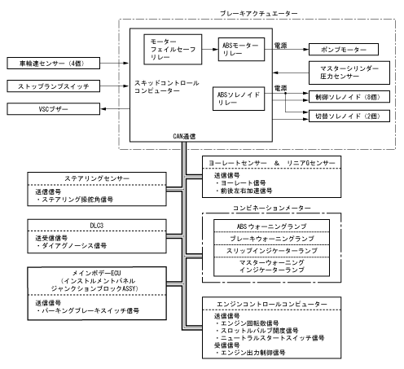

| Skid Control Computer |
| ● |
The skid control computer processes the signals from each sensor and performs the brake control for ABS, TRC, VSC, hill-start assist control and brake assist. It also communicates with the engine control computer and outputs control signals.
|
 |
 VSC Control VSC Control
|
| TRC Control
|
| Initial Check Function
|